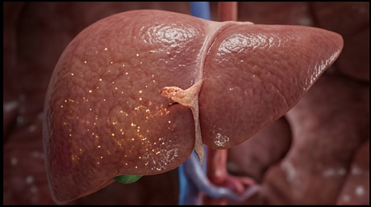
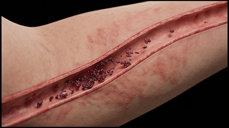
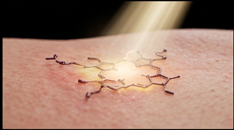
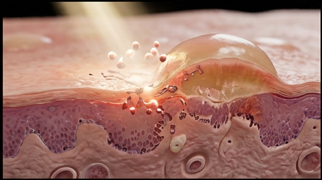
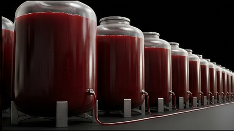
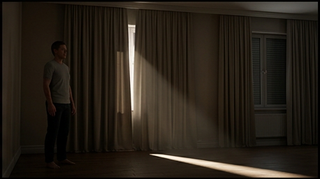
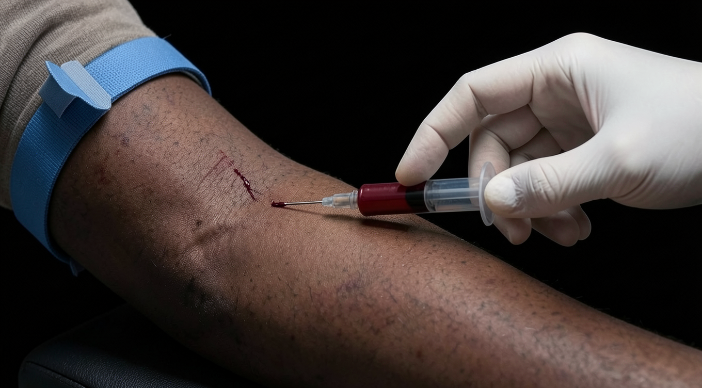
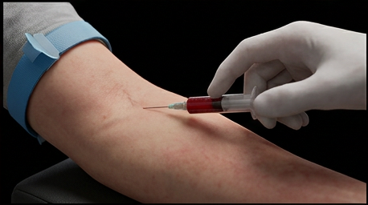
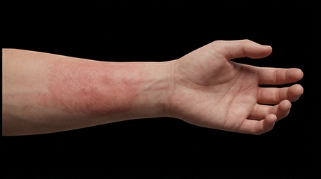
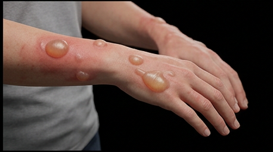

The forearm comes in blistered: fragile, sun-exposed skin, bullae that opened on contact most people wouldn't notice. Read that skin for what it actually represents, not a sunburn, not an allergy, but the visible end of a pathway that stopped working three organs away.
This case study follows that pathway backward from the skin to the liver and back out again, because that's the actual shape of the disease: a block in one enzyme, a backup with nowhere to go but into circulation, and skin that pays for a problem it never caused.

Heme synthesis runs through a long chain of enzymatic steps in the liver, each one converting one porphyrin precursor into the next. Uroporphyrinogen decarboxylase is supposed to strip carboxyl groups off uroporphyrinogen and hand off coproporphyrinogen to the next step in line. In porphyria cutanea tarda, that handoff never happens.
The block sits at uroporphyrinogen specifically, not further down the chain. Iron overload, alcohol, estrogen, and chronic hepatitis C all push toward the same inhibited enzyme, and once it's inhibited, uroporphyrinogen has nowhere to go but backward.

A liver that's full doesn't just hold the excess. Backed-up uroporphyrinogen spills into the bloodstream and travels, the same circulation that was supposed to carry finished heme instead carrying its unfinished precursor to every tissue downstream.
It doesn't cause damage there. Not yet. It just deposits, quietly, in sun-exposed skin specifically, waiting for the one trigger the liver never had to worry about.

Porphyrins absorb light in a very specific band, and when they do, they don't just glow. They react. Light striking the deposited porphyrins generates reactive oxygen species directly in the skin, real oxidative damage to a layer of tissue that had no way of knowing it was carrying a photosensitizer.
That's the bulla. Not sun damage in the usual sense, a photochemical reaction happening inside skin that became reactive without the patient doing anything differently. Staying out of that light is its own form of treatment, and often the only one available before the pathway itself starts working again.


Iron is what lets the inhibitor of uroporphyrinogen decarboxylase form in the first place, so the first treatment isn't a drug. It's phlebotomy, repeated, over the full course of treatment, drawing down hepatic iron stores until the enzyme has a real chance to work again.
One session doesn't do it. The volume that actually needs to come out, across the full treatment course, adds up to far more blood than a single draw could ever represent.


Phlebotomy isn't always an option, and even when it is, it isn't the only lever. Low-dose hydroxychloroquine binds the accumulated porphyrins directly, forming a water-soluble complex the liver can actually clear, mobilizing years of backup out through excretion instead of waiting on iron depletion alone.
Two different mechanisms, one shared target: get the backed-up porphyrins out of the liver, by whichever route gets there first.


The iron comes down. The enzyme comes back online. The bloodstream stops carrying unfinished porphyrin to skin that was never built to handle it, and the skin that already blistered finally gets the chance to close. Sun protection holds the line while all of that catches up, because the deposits already in the skin don't clear on day one. The same forearm that came in blistered goes back out intact, not because the sun changed, but because the pathway that made the sun dangerous finally started working again.

You're set. We'll send the full write-up to your inbox shortly.